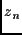
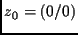
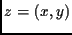
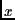
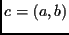
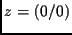
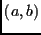
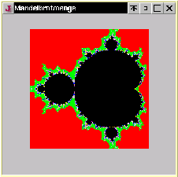

Die Mandelbrotmenge ist in der Informatik als ``Apfelmännchen'' berühmt geworden. Seine charakteristische Form ziert heute Buchumschläge wie T-Shirts ;-). Es ist jedenfalls ein Fraktal, das durch eine rekursiv definierte Folge von komplexen Zahlen  entsteht:
Dabei ist .
Stellen wir die komplexe Zahl  mit Realteil  und Imaginärteil dar, und sind und Real- und Imaginärteil der komplexen Zahl , so erhalten wir die obige Definition in der folgenden Form:
Wir untersuchen nun das Verhalten des Koordinatenursprunges  unter der angegebenen Iteration. Konvergiert er für einen Parameter  der komplexen Zahlenebene bei der angegebenen Rekursion, so ist dieser ein Element der Mandelbrot-Menge 22. Der ``konvergente'' Punkt wird beispielsweise schwarz eingefärbt. Strebt die Rekursion für den gewählten Parameter gegen , so wird er ``verworfen''.
Anschließend wird der nächste Punkt untersucht.
Die Gleichung lösen wir also koordinatenweise auf und kodieren eine entsprechende Iteration über alle Punkte eines gewählten Quadrates der komplexen Zahlenebene. Das Quadrdat wird durch den ``Eckpunkt'' (amin, bmin) und durch seine Kantenlänge k festgelegt. Zusätzlich müssen die Punkte der komplexen Zahlenebene auf ein Bildschirmquadrat (im folgenden Programm auf 200x200 Pixel) ``gezoomt'' werden. Dazu dividieren wir die Kantenlänge des Quadrats durch 200 (Zahl der Pixel, Schrittweite ds = k/200) und erhöhen bei jeder Iteration den Realteil bzw. den Imaginärteil der kopmlexen Zahl um diese Schrittweite ds.
import java.awt.*;
import java.awt.event.*;
public class mandel extends Frame {
public static void main(String arguments[]) {
mandel proggi = new mandel();
WindowListener wl = new WindowAdapter() {
public void windowClosing(WindowEvent e) {
System.exit(0);
}
};
proggi.addWindowListener(wl);
proggi.setLocation(100,100);
proggi.setSize(300,300);
proggi.show();
}
mandel() {
super("Mandelbrotmenge");
}
public void paint (Graphics bs) {
double amin;
double bmin;
double kante;
double ds;
double a;
double b;
double x;
double y;
double xx;
double yy;
int s;
int r;
int zaehler;
amin=-1.5;
bmin=-1;
kante=2;
ds=kante/200;
a=amin;
for (s=0; s<=200; s++) {
b=bmin;
for (r=0; r<=200; r++) {
x=0;
y=0;
zaehler=0;
while ((zaehler < 100) && (Math.sqrt(x*x+y*y)<2)) {
zaehler++;
xx=x*x-y*y+a;
y=2*x*y+b;
x=xx;
}
if (zaehler == 100) {
bs.setColor(Color.black);
bs.drawLine(s+50,r+50,s+50,r+50);
}
if (zaehler < 10) {
bs.setColor(Color.red);
bs.drawLine(s+50,r+50,s+50,r+50);
}
else if (zaehler < 20) {
bs.setColor(Color.green);
bs.drawLine(s+50,r+50,s+50,r+50);
}
else if (zaehler < 30) {
bs.setColor(Color.lightGray);
bs.drawLine(s+50,r+50,s+50,r+50);
}
else if (zaehler < 40) {
bs.setColor(Color.blue);
bs.drawLine(s+50,r+50,s+50,r+50);
}
else if (zaehler < 50) {
bs.setColor(Color.yellow);
bs.drawLine(s+50,r+50,s+50,r+50);
}
else if (zaehler < 60) {
bs.setColor(Color.magenta);
bs.drawLine(s+50,r+50,s+50,r+50);
}
else if (zaehler < 70) {
bs.setColor(Color.gray);
bs.drawLine(s+50,r+50,s+50,r+50);
}
else if (zaehler < 80) {
bs.setColor(Color.orange);
bs.drawLine(s+50,r+50,s+50,r+50);
}
else if (zaehler < 90) {
bs.setColor(Color.white);
bs.drawLine(s+50,r+50,s+50,r+50);
}
else if (zaehler < 100) {
bs.setColor(Color.cyan);
bs.drawLine(s+50,r+50,s+50,r+50);
}
b=b+ds;
}
a=a+ds;
}
}
}
Die eigentlichen ``Programmzeilen'' stehen in der Methode paint(), die beim Öffnen des Programmes ausgeführt wird.

Interessanterweise sind die ``Fortsätze'' des ``Apfelmännchens'' selbst wieder von der Gestalt eines ``Apfelmännchens'', wenngleich sie deutlich kleiner sind. Diese ``Selbstähnlichkeit'' legt nahe, dass das erhaltene Gebilde ein Fraktal darstellt23. Um kleinere Ausschnitte des Fraktales darstellen zu können ist es notwendig, die Eckpunktskoordinaten (amin, bmin) des Quadrates und seine Kantenlänge kante neu zu wählen. Das Inkrement ds für die Iteration über alle Spalten bzw. über alle Punkte jeder Spalte wird so berechnet, dass der gewählte Ausschnitt auf einem 200 Pixel x 200 Pixel großen Bereich des Bildschirmes dargestellt wird.